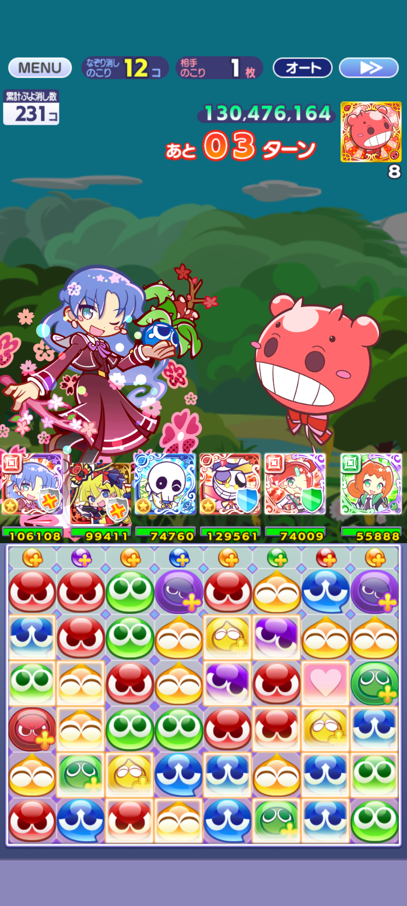

【解説】ぷよクエのルール・ぬりかえスキルとC言語による高速探索ロジック
ぷよぷよ!!クエストのゲームの基本ルールやなぞり消しの仕組み、そして自作の解析シミュレータがC言語プログラムでどのように計算しているのかを解説します。
1. 基本的なルールとゲームシステム

ゲームのメイン盤面は 縦6行 × 横8列 ＝ 計48マス で構成されています。
あらかじめ敷き詰められたぷよに対して、プレイヤーが干渉して連鎖を起こすパズルゲームです。
なぞり消し（プレイヤーの基本操作）
画面上のぷよを指でスライドして直接消去する操作です。
- 接続条件: 上下・左右・斜めに隣接しているぷよだけを一筆書きのようになぞって消せます（離れた場所にあるぷよを同時に選ぶことはできません）。
- なぞり消し可能数: 1手でなぞれる個数の上限は、画面上部のステータス枠に表示されます。
ぷよの消滅と落下の順序
- 同色4連結ルール: なぞり消し後や落下後に、同じ色のぷよが上下左右に 4個以上 接触すると自動的に消滅します（斜め接続は無効）。
- ハートぷよ（桃色）: ハートは単体で4つ繋がっても消えませんが、隣接する色ぷよが消える際に巻き込まれて一緒に消滅します。
- 落下の順序: 空いたスペースへ上のぷよが重力落下し、さらに最上段の空きマスへ「NEXTぷよ」が列ごとに上から1個ずつ補充されます。この落下によって再度4つ以上揃うと「連鎖」が発生します。
2. スキル（ぬりかえ）の説明
特定のキャラクターが発動できる「ぬりかえスキル」は、盤面上の好きなぷよをある色へ塗り替えるスキルです。
このスキルを使うとき、ターンは進みません。
3. 点数計算
イベントのぷよつかい大会では、盤面に得点倍率を持つ特殊要素が配置されます。
イベントのぷよつかい大会では、ぬりかえから始まる連鎖ではスコアが入らず、なぞり消しから始まる連鎖でスコアを得ます。
- プラスぷよ（+）: ぷよの中心に黄文字で「＋」が描かれたもの。消すと通常の 2倍 の基礎点が入ります。
- ボーナスエリア（BE）: 盤面上で黄色い枠線で光っている特定のマス。この枠内で消滅したぷよは得点が 3倍 になります。
・通常ぷよ ＝ 1点
・プラスぷよ ＝ 2点（×2倍）
・ボーナスエリア内の通常ぷよ ＝ 3点（×3倍）
・ボーナスエリア内のプラスぷよ ＝ 6点（2×3＝6倍）
ボーナスエリア内でぷよを連鎖させられるかが、最終スコアを大きく左右します。
4. イベントの流れ
ぷよつかい大会は、限られたターンの中でどれだけ高い合計スコアを叩き出せるかを競うスコアアタックイベントです。
1. ぬりかえスキルを発動（ターン消費なし / 盤面を連鎖の形に整える）×2
2. 手動でなぞり消しを実行（1ターン消費 / スコア加算）
3. 連鎖終了後、次のターンへ移行
この「スキル発動 ➔ なぞり消し」のセットを 全6ターン 繰り返します。
毎ターンランダムに24個がプラスぷよになります。
毎ターン獲得したスコアが累積加算され、6ターン終了時の合計スコアがプレイヤーの最終スコアとなります。
5. プログラムの仕組み

ぬりかえスキルを2回分（例：赤12個、青12個）使う場合、48マスの中から塗り替える組み合わせは 10^17～10^20 通り に達し、全探索することは困難です。
本シミュレータは、この広大な探索空間からランダムなぬりかえを探索します。(1.5×10^7パターン/s)
① ぬりかえ後の暴発確認（探索の高速化）
ぬりかえを行った直後に、なぞり消しをする前に同色ぷよが4つ以上繋がってしまうと、得点が入らない盤面変化が起こってしまいます。
プログラムでは、盤面全体に4連結が存在しないかをチェックします。
- 2色合成チェック: スキル1（色1）とスキル2（色2）を順次塗り替える際、どちらかの色が先に変えても途中で暴発しない色がであるかを検証し、安全な実行優先順（属性変換の優先順序）まで判定します。
- 高速枝刈り: 暴発が検知された盤面は、スコア計算に進む前に即座に破棄して無駄な処理を省きます。
② ぬりかえ個数の柔軟な調整（探索範囲の拡大）
スキルの最大ぬりかえ数が「12個」だからといって、常に12個きっちり使い切るのが最善とは限りません。盤面によっては、「あえて10個や11個だけ塗り替えた方が、元々ある良い配置を崩さずに大連鎖へ繋がる」というケースが多々あります。
- ぬりかえ数のバリエーションを自動探索: 最大数（例: 12個・12個）だけでなく、「11個・12個」「12個・11個」のように、少し個数を減らした組み合わせも含めて幅広く盤面を探索します。
- 探索深度による制御: どこまで個数を減らしたパターンまで調べるかをユーザーが設定でき、計算時間と探索の幅のバランスを柔軟に調整できるようにしています。
③ ネクストぷよ落下後の連鎖数制限
実際のスコア計算（score_keisan）では、なぞり消し後の盤面内連鎖だけでなく、上段から降ってくる「NEXTぷよ」の落下後までシミュレートしています。
- 初期連鎖: なぞり消し起爆後、盤面内のぷよが4連結で消滅し、重力で詰まる処理をループ。
- 列ごとのNEXT補充: 空きができた各列の一番上のマスに、指定されたNEXTぷよを1個ずつ補充。
- 追加連鎖の制御: NEXTが降ってきた後に発生する追加連鎖について、設定された制限回数まで得点加算を行います。
6. 今後の改善・実装予定（開発の展望と課題）
現在は完全なランダムサンプリングを中心としていますが、限られた計算時間の中でさらにスコアを伸ばすため、以下の機能拡張とアルゴリズムの改良を検討しています。
① 有望な配置の部分固定（2段階探索アルゴリズム）
探索の初期段階で上位10個に残った盤面を分析し、「多くの高得点パターンで共通して塗り替えられているマス（例：8個以上で一致する位置）」をコアとして固定したぬりかえパターンを再探索する仕組みです。
- 目的: 探索空間を一気に絞り込み、より洗練された局所最適解へ収束させる。
- 課題: 「何個のマスを固定するのが最も有効か」「初期探索と固定後探索の時間配分をどう設計するか」の最適パラメータの検証。
② NEXTぷよ落下後の「連鎖の繋がりやすさ」の評価
NEXTぷよが落ちて連鎖した際、隣り合う列との落下距離が異なることでNEXTぷよより上の予測できない部分で連鎖がどれだけ起きやすいかを加味してスコアを出す仕組みです。
- 目的: 確定した点数だけでなく、未知の追加連鎖を誘発しやすい配置を優先する。
- 課題: 「連鎖の起きやすさ」をどう数値化・スコア化して評価関数に組み込むか。
③ 次ターンを見据えた「プラスぷよ残存数」の評価
全6ターンで競うルール上、最終ターン以外は、盤面に残ったプラスぷよは次ターン以降に消して得点に変換できます。そのため、「盤面により多くのプラスぷよを残せるぬりかえ配置に加点する」評価ロジックの導入を目指しています。
- 目的: 目の前の1ターンだけでなく、全6ターンのトータルスコアを最大化する。
- 課題: 「今ターンで即時獲得する点数」と「次ターンに残すプラスぷよの価値」の重み付け比率の調整。